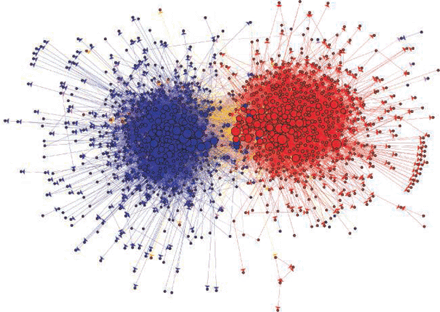

Basics of Network Visualization
Let’s be honest, network analysis is awesome. Where does that awesomeness come from? One sure reason is visualization! There is nothing like an beautiful network visualization that conveys lots of information and is aesthetically pleasing. Right?
Not convinced? Examine the plot below. Without me giving you any information about this figure (which is from James Moody and Peter Mucha’s paper, Portrait of Political Party Polarization), what does it tell you?
What about this one showing political blogs? (from David Lazer and colleagues paper Computational Social Science). What does the visualization “say” or “tell you”?

In this tutorial, you will be introduced to the basics of visualizing networks using the gplot() function in the sna package. We will also look at some approaches to building plots to help guide you in honing your SNA toolkit.
Network Visualization
One of the great features of working with network data is the ability to see the data through visualization. Visualizing the structure of a network is helpful for discerning patterns that might be of interest.
Douglas Luke’s (2015: 47) A User’s Guide to Network Analysis provides several guidelines, or aesthetic principles, for what makes a graphical layout of a network easy to understand and interpret. These are:
- Minimize edge crossings
- Maximize the symmetry of the layout of nodes
- Minimize the variability of the edge lengths
- Maximize the angle between edges when they cross or join nodes
- Minimize the total space used for the network display
Think about each of these suggestions. Why do they aid in visualizing the network? How do they assist in avoiding conveying information that is not really there? Ponder these questions for a bit…
Getting Started
Now that you have a sense of what a good visualization should try to do, let’s look at the example Luke uses as an illustration by working with the gplot() function in the sna package.
First, we need to install the sna package using install.packages( "sna" ) and load the library using library( sna ).
Remember, if you have already installed a package then you do not need to use the install.packages() function. But, if you have not installed the package in a while, you should use update.packages() to incorporate any changes that have been made to the page.
Next, let’s get the UserNetR package from Douglas Luke’s GitHub page. Since this package is not on the CRAN package repository, we need to install it directly from Github. We do this in four steps:
First, install the devtools package using
install.packages( "devtools" )And then load the library for the package with
library( devtools )Now, install the
UserNetRpackageinstall_github( "DougLuke/UserNetR" )Finally, load the library
library( UserNetR )
Altogether, that looks something like this:
# install the packages
install.packages( "sna" )
install.packages( "devtools" )
# call the libraries
library( sna )
library( devtools )
# install from Github
install_github( "DougLuke/UserNetR" )
# call that library
library( UserNetR )Now, let’s take a look at the Moreno network (see help( Moreno, package = UserNetR ). These data are contained in a sociogram constructed by Jacob Moreno, and published in the New York Times in 1933 (see Moreno, J. L. 1934. Who shall survive? A new approach to the problem of human interrelations. Nervous and mental disease monograph series, no. 58. Washington, DC: Nervous and Mental Disease Publishing Co. for a more extensive discussion).
# Note that we ask the summary() function to not print out the adjacency matrix.
summary( Moreno, print.adj = FALSE )Network attributes:
vertices = 33
directed = FALSE
hyper = FALSE
loops = FALSE
multiple = FALSE
bipartite = FALSE
total edges = 46
missing edges = 0
non-missing edges = 46
density = 0.08712121
Vertex attributes:
gender:
numeric valued attribute
attribute summary:
Min. 1st Qu. Median Mean 3rd Qu. Max.
1.000 1.000 2.000 1.515 2.000 2.000
vertex.names:
character valued attribute
33 valid vertex names
No edge attributes# Now, let's compare two different plot layouts.
# Here is a circle.
gplot( Moreno, mode = "circle" )
# Here is a separate layout.
gplot( Moreno, mode = "fruchtermanreingold" )
Think back to the aesthetic elements we discussed above. How do these two plots differ in how well they convey the same information? Which one is better? Why is it better?
To think about these questions, let’s plot the two layouts together. To do this we will use the par() function. This allows us to partition the plotting region.
# First, we define the plot layout window.
op <- par(
mar = rep( 2, 4 ), # set the margins
mfrow = c( 1, 2 ) # set the dimensions
)
# plot the circle layout (add the main() argument for a title)
gplot( Moreno, mode = "circle", main = "Plotted as a circle" )
# plot the Fruchterman Reingold layout
gplot( Moreno, mode = "fruchtermanreingold", main = "Plotted using a spring algorithm" )
Again, think about our questions: How do these two plots differ in how well they convey the same information? Which one is better? Why is it better?
Adding Attributes
If we add information about gender, we can see a bit more that is revealed by the spring algorithm.
To do so, we use the vertex.col= argument with the vertex attribute gender. To do so, we need to access the vertex attribute. We can do this with:
the
get.vertex.attribute()function in thesnapackage. Uselibrary( sna )and specify the attribute we want, likeget.vertex.attribute( Moreno, "gender" )or use the shorthand for this with
network object %v% atttribute, likeMoreno %v% "gender"
op <- par( mar = rep( 2, 4 ), mfrow = c( 1, 2 ) )
gplot( Moreno,
mode = "circle",
main = "Plotted as a circle",
vertex.col = get.vertex.attribute( Moreno, "gender" ) # use the vertex attribute.
)
gplot( Moreno,
mode = "fruchtermanreingold",
main = "Plotted using a spring algorithm",
vertex.col = Moreno %v% "gender" # note the difference here compared to above.
)
# let's add a legend to the plot
legend(
"bottomleft",
legend = c( "Male","Female" ),
col = c( "red","black" ),
title = "legend",
pt.cex = 0.75,
bty = "n",
pch = 19
)
What is the primary story that the plot tells? Does a particular layout help us see that better?
Ok, that was a lot. Let’s work our way back through the mechanics of building a plot to better get a sense of what we are doing.
Working with the gplot() Function
Let’s take a look at some of the visualization capabilities of gplot(). Let’s start by looking at the function’s help page: ?gplot.
To see the various functionality of the function, let’s work with our example of an undirected network.
# define the path where the data are
url <- "https://github.com/jacobtnyoung/snaca-r/raw/main/data/data-undirected-example.csv"
# define the object
mat_u <- as.matrix(
read.csv(
url,
as.is = TRUE,
header = TRUE,
row.names = 1
)
)
# now, create the network
net_u <- network(
mat_u,
directed = FALSE
)
# take a look at the network
summary( net_u )Network attributes:
vertices = 5
directed = FALSE
hyper = FALSE
loops = FALSE
multiple = FALSE
bipartite = FALSE
total edges = 5
missing edges = 0
non-missing edges = 5
density = 0.5
Vertex attributes:
vertex.names:
character valued attribute
5 valid vertex names
No edge attributes
Network adjacency matrix:
Jen Tom Bob Leaf Jim
Jen 0 1 0 0 0
Tom 1 0 1 0 0
Bob 0 1 0 1 1
Leaf 0 0 1 0 1
Jim 0 0 1 1 0#NOTE: we could have wrapped all of this into two statements
net_u <- as.network(
as.matrix(
read.csv(
"https://github.com/jacobtnyoung/snaca-r/raw/main/data/data-undirected-example.csv",
as.is = TRUE,
header = TRUE,
row.names = 1
)
),
directed = FALSE
)
summary( net_u )Network attributes:
vertices = 5
directed = FALSE
hyper = FALSE
loops = FALSE
multiple = FALSE
bipartite = FALSE
total edges = 5
missing edges = 0
non-missing edges = 5
density = 0.5
Vertex attributes:
vertex.names:
character valued attribute
5 valid vertex names
No edge attributes
Network adjacency matrix:
Jen Tom Bob Leaf Jim
Jen 0 1 0 0 0
Tom 1 0 1 0 0
Bob 0 1 0 1 1
Leaf 0 0 1 0 1
Jim 0 0 1 1 0Now that we have the object built, we can plot it.
gplot( net_u )
Hold on, this plot shows arrows. But this network is undirected. What gives?
That is because gplot() assumes a directed network. We can see this in the help menu, ?gplot, where is shows that for the type of network, the gmode= argument defaults to a directed graph. To fix this we can either:
manually turn off the display of arrows using the
usearrows=argument,gplot( net.u, usearrows = FALSE )or indicate that the object to be plotted is a undirected graph or graph,
gplot( net.u, gmode = "graph" )
The gplot() function has a number of arguments that can be used to work try and better display the information contained in the network.
For example, we can add labels to the vertices using the network.vertex.names() function.
gplot(
net_u,
gmode = "graph",
label = network.vertex.names( net_u )
)
Alternatively, we could add in a string of names for the label:
gplot( net.u, gmode = "graph", label = c( "Jen", "Tom", "Bob", "Leaf", "Jim" ) )
Or we could read them in as an object:
names <- c( "Jen", "Tom", "Bob", "Leaf", "Jim" )add to the plot using
gplot( net.u, gmode = "graph", label = names )
A great feature of R is that we can tune the graphing parameters. Here are several examples:
Labels:
Add boxes around the labels,
boxed.labels = TRUEChange label size using
label.cex, such aslabel.cex = 1.5Color the labels using
label.col=, such as:label.col = "blue"
Colors:
different colored names, combine
label.col=with thec()function. Such as:label.col = c( "red", "blue", "green", "orange", "grey" )different colored nodes,
vertex.col=argument. Such as:vertex.col=c("red","blue","green","orange","grey")different colored edges, using
edge.col=, such as:edge.col=c("red","blue","green","orange","grey")
There is a LOT of functionality to the gplot() function. See the arguments in the help file: ?gplot. I would encourage you to take some time to look through it and play around with the various features.
Adjusting Plot Layout
When a layout is generated, the results can be saved for later reuse using the coord= argument.
# Set the seed for the random number generator
# so we can always get the same plot layout.
set.seed( 605 )
# Define an object that will be the coordinates we want to use.
coords <- gplot(
net_u,
gmode = "graph",
label = network.vertex.names( net_u )
)
# Show the vertex coordinates.
coords x y
[1,] -5.441389 -1.849797
[2,] -4.682331 -3.198937
[3,] -3.171835 -3.157688
[4,] -2.055885 -2.041756
[5,] -1.648225 -3.476604Take a close look at the coords object. What do the values represent? Think about how this information is used in the plot.
Now, we can pass the coordinates into a plot.
# Saved layouts can be used via the coord= argument:
gplot(
net_u,
gmode = "graph",
label = network.vertex.names( net_u ),
coord = coords
)
Cool but, why do this? The placement of the nodes shift when we call the gplot() function just due to the operation of the algorithm. Controlling where nodes are plotted in the 2-dimensional space is useful if we want to show different aspects of the plot. Note that we can have different layouts of the nodes. If we like a particular one, we can save the coordinates.
But, suppose the default settings are insufficient and we want to make a few small changes. The interactive= argument allows for tweaking.
# First, set up the coordinates you want.
coords <- gplot(
net_u,
gmode = "graph",
label = network.vertex.names( net_u ),
coord = coords,
interactive=TRUE
)When this renders on your system, move a few of the nodes around. Then, after you close the window it will save the coordinates.
# Then, use these in the plot.
gplot(
net_u,
coord = coords,
gmode = "graph",
label=network.vertex.names( net_u )
) A Layering Approach
As we have seen, we can start with a basic plot and add information. Creating graphics in this way is referred to as layering because we are stacking additional layers of elements on top of each other.
Take a look at this series of plots:

The plot uses several layers of information:
- the size of the nodes (
vertex.cex) - the color of the nodes (
vertex.col) - the color of the edges (
edge.col)
As we create a plot, we want to think about what information we should convey and how best to convey that information (i.e. colors?, shapes?, size?, all of the above?)
Plotting the Power/Influence Network from the Prison Inmate Networks Study (PINS)
The Prison Inmate Networks Study (PINS) examines the social networks of prison inmates in a state correctional institution. The study was unique in that it was the first in nearly a century to collect sociometric data in a prison. The researchers collected data on several types of networks.
Let’s plot the power and influence network, which was created by asking individuals whom they believed was “powerful and influential” on the unit. We will continue working with the gplot() function.
We are going to do this in a few steps:
First, load the adjacency matrix,
data-PINS-power-w1-adj.csv, and create an object of classnetwork.Second, load the file with Age and Race attributes,
data-PINS-w1-age-race-attributes.csv, and assign each attribute to the network object.
# define the adjacency matrix
PI_mat <- as.matrix(
read.csv(
"https://raw.githubusercontent.com/jacobtnyoung/snaca-r/main/data/data-PINS-power-w1-adj.csv",
as.is = TRUE,
header = TRUE,
row.names = 1
)
)
# create an object of class network
PI_net <- network( PI_mat, directed = TRUE )
# define the attributes object
PI_attrs <- read.csv(
"https://raw.githubusercontent.com/jacobtnyoung/sna-textbook/main/data/data-PINS-w1-age-race-attributes.csv",
as.is = TRUE,
header = TRUE
)
# assign the attributes to the network
PI_net %v% "Age" <- PI_attrs[,1]
PI_net %v% "Race" <- PI_attrs[,2]Note that we used a shorthand notation: %v%. This is an assignment operation that tells R to assign something to the network. Specifically, %v% indicates the assignment to a vertex, hence the v.
The operate also let’s us pull a specific attribute. We can look at the various vertex data by using the shorthand network %v% "attribute". For example:
PI_net %v% "Age"shows the age variable.PI_._net %v% "Race"shows the race variable.
# look at the values for age
PI_net %v% "Age" <- PI_attrs[,1]
# look at the values for race
PI_net %v% "Race" <- PI_attrs[,2]Note that we can also reference edges (i.e. %e%) if a network has an assigned edge. For example, we could pull the information network and assign that to the power influence network:
# define the adjacency matrix
INFO_mat <- as.matrix(
read.csv(
"https://raw.githubusercontent.com/jacobtnyoung/snaca-r/main/data/data-PINS-info-w1-adj.csv",
as.is = TRUE,
header = TRUE,
row.names = 1
)
)
# assign the matrix as an edge attribute
PI_net %e% "info" <- INFO_matThink about what we did on the last line. For the power influence edges, we assigned INFO_._mat as an attribute. This represents whether a power/influence tie was also an information network tie.
Now, we can use that information in our plot. For example:
gplot( PI_net,
arrowhead.cex=0.5,
vertex.cex = PI_net %v% "Age" )YIKES!!! What is wrong?
The problem is that we need to rescale the vertex attribute so that the nodes are not too big. Let’s build a function to do that and then execute the gplot() function:
rescale <- function( nchar, low, high ){
min_d <- min( nchar )
max_d <- max( nchar )
rscl <- ( ( high - low )*( nchar - min_d ) ) / ( max_d - min_d ) + low
rscl
}Now, use the function we created to rescale the vertex attribute:
# now execute the plot
gplot( PI_net,
arrowhead.cex=0.5,
vertex.cex = rescale( PI_net %v% "Age", 0.5, 1.5 ) )Note that the plot above has a lot of “whitespace” due to the margins. We can adjust this using the par() function.
# tweak the margins to cut some whitespace
par( mar = c( 0.1,0.1,0.1,0.1 ) )
# now execute the plot
gplot( PI_net,
arrowhead.cex=0.5,
vertex.cex = rescale( PI_net %v% "Age", 0.5, 1.5 ) )
That looks better. Let’s drop the isolates (using the displayisolates = FALSE argument) to help with the visualization.
par( mar = c( 0.1,0.1,0.1,0.1 ) )
gplot( PI_net,
displayisolates = FALSE,
arrowhead.cex=0.5,
vertex.cex = rescale( PI_net %v% "Age", 0.5, 1.5 ) )
How about we color the edges based on whether there was a information network tie.
par( mar = c( 0.1,0.1,0.1,0.1 ) )
gplot( PI_net,
edge.col = PI_net %e% "info" + 1,
displayisolates = FALSE,
arrowhead.cex=0.5,
vertex.cex = rescale( PI_net %v% "Age", 0.5, 1.5 ) )
As we build layers, we can get a fairly useful graphic that tells us a lot of information:
par( mar = c( 5,0.1,3,0.1 ) )
gplot( PI_net,
main="PINS Power/Influence Network", # add a title
vertex.col = PI_net %e% "Race", # color the nodes by the Race variable
edge.col = PI_net %e% "info" + 2, # color the edges by the information network attribute
displayisolates = FALSE, # don't display the isolated cases
arrowhead.cex=0.5, # augment the size of the arrowheads
vertex.cex = rescale( PI_net %v% "Age", 0.5, 1.5 ), # size the nodes by the Age variable
sub="Nodes colored by Race, \n edges colored by Info net \n nodes sized by Age" # add a subtitle
)
Test Your Knowledge Exercises
- Using the
Morenodataset, compare the circle layout and the Fruchterman-Reingold layout. Which layout better adheres to the aesthetic principles discussed above? Why? - Modify the
Morenovisualization to color nodes by gender. How does this addition change your interpretation of the network structure? - When plotting an undirected network, why might
gplot()still display arrows? How can this be resolved? - Experiment with adding labels to a network plot. What are some ways to customize label appearance? Why might label size or color be important?
- Use the
rescale()function to adjust node sizes based on a vertex attribute. Try some different values. How do the difference values influence your understanding of the network? - Explain why saving node coordinates using the
coord=argument can be useful. Demonstrate how to save and reuse coordinates in a network plot. - Describe the concept of layering in network visualization. Create a plot that layers at least three attributes (e.g., node size, color, edge attributes).
- Compare a basic network plot of the PINS dataset with one that incorporates multiple attributes. What additional insights does the more detailed visualization provide?
Tutorial Summary
There is nothing like a beautiful network visualization that conveys lots of information and is aesthetically pleasing. Now you know how to get there! As you have seen, there is a ton of flexibility. I would encourage you to spend some time tinkering with the various arguments for the gplot() function to get a feel for what it can do.